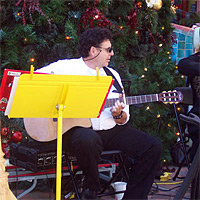
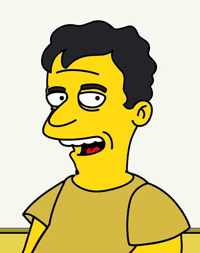

| Research Abstract
My work pursues especially perplexing issues and problems in metaphysics through the investigation of language. My first book, Reference and Essence (Princeton University Press and Basil Blackwell, 1982), deals with a nest of issues in an area of overlap between the philosophy of language and metaphysics. My second book, Frege's Puzzle (Ridgeview, 1986, 1991), belongs more squarely in the philosophy of language, and indeed, directly addresses what many regard as the central problem in the philosophy of language, but it has also led to a number of projects touching on topics in metaphysics, the philosophy of mind, the philosophy of psychology, epistemology, the philosophy of logic, and the philosophy of mathematics. Many of these issues are discussed in a collection I co-edited, Propositions and Attitudes (Oxford University Press, 1988). I am currently working on the problem of personal identity, as well as a host of problems and issues raised by names from fiction and other nonreferring terms.
Selected Bibliography
BOOKS
- Reference and Essence (Princeton University Press, 1981; and Basil Blackwell, l982).
- Frege’s Puzzle (Cambridge, Mass.: Bradford Books, MIT Press, 1986).
- Frege's Puzzle (Second Edition) (Atascadero, Ca.: Ridgeview, 1986, 1991).
- Reference and Essence (Second Edition), with new appendices (Amherst, NY: Prometheus Books, 1981, 2005).
- Metaphysics, Mathematics, and Meaning: Philosophical Papers I (Oxford University Press, 2006).
- Content, Cognition, and Communication: Philosophical Papers II (Oxford University Press, 2007).
ARTICLES
- Critical Review of Leonard Linsky, Names and Descriptions, The Journal of Philosophy, vol. LXXVI, no. 8 (August l979), pp.436-452 [invited].
- “How Not to Derive Essentialism from the Theory of Reference,” The Journal of Philosophy, vol. LXXVI, no. l2 (December l979), pp. 703-725.
- “Assertion and Incomplete Definite Descriptions,” Philosophical Studies, vol. 42, no. l (July l982), pp. 37-45; reprinted in Content, Cognition, and Communication, Chapter 15.
- “Fregean Theory and the Four Worlds Paradox: A Reply to David Over,” Philosophical Books, vol. 25, no. 1 (January 1984), pp. 7-11 [invited]; reprinted in Reference and Essence (Second Edition), Appendix.
- “Impossible Worlds,” Analysis, vol. 44, no. 3 (June 1984), pp. 114-117; reprinted in Metaphysics, Mathematics, and Meaning, Chapter 5.
- “Reflexivity,” Notre Dame Journal of Formal Logic, vol. 27, no. 3 (July 1986), pp. 401-429 [invited]; reprinted in Propositions and Attitudes (Oxford Readings in Philosophy, 1988), pp. 240-274; also in Content, Cognition, and Communication, Chapter 2.
- “Modal Paradox: Parts and Counterparts, Points and Counterpoints,” in Peter French, Theodore Uehling, Jr., and Howard Wettstein, eds, Midwest Studies in Philosophy XI: Studies in Essentialism (Minneapolis: University of Minnesota Press, 1986), pp. 75-120 [invited]; reprinted in Reference and Essence (Second Edition), pp. 75-120; reprinted in Reference and Essence (2nd Edition), pp. 273-344.
- “Existence,” in James Tomberlin, ed., Philosophical Perspectives, 1: Metaphysics (Atascadero, Calif.: Ridgeview, 1987), pp. 49-108 [invited]; reprinted in Metaphysics, Mathematics, and Meaning, Chapter 1.
- “The Fact that x = y,” Philosophia (Israel), vol. 17, no. 4 (December 1987), pp. 517-518 [invited]; reprinted in Metaphysics, Mathematics, and Meaning, Chapter 8.
- “An Empire of Thin Air,” Critical Review of David Lewis, On the Plurality of Worlds, The Philosophical Review, vol. XCVII, no. 2 (April 1988), pp. 237-244; reprinted in Metaphysics, Mathematics, and Meaning, Chapter 6 [invited].
- “How to Measure the Standard Metre,” Proceedings of the Aristotelian Society New Series, vol. LXXXVIII (1987/1988), pp. 193-217 [invited] ; reprinted in Matthew Davidson, ed., On Sense and Direct Reference (McGraw-Hill, 2007).
- “The Logic of What Might Have Been,” The Philosophical Review, vol. XCVIII, no. 1 (January 1989), pp. 3-34; reprinted in Metaphysics, Mathematics, and Meaning, Chapter 7.
- “Reference and Information Content: Names and Descriptions,” in Dov Gabbay and Franz Guenthner, eds, Handbook of Philosophical Logic IV: Topics in the Philosophy of Language (Dordrecht: D. Reidel, 1989), Chapter IV.5, pp. 409-461; reprinted in Dov Gabbay and Franz Guenthner, eds, Handbook of Philosophical Logic, Second Edition, 10 (Boston: Kluwer, 1989, 2003), pp. 39-85 [invited].
- “How to Become a Millian Heir,” Noûs, vol. 23, no. 2 (April 1989), pp. 211-220 [invited].
- “Tense and Singular Propositions,” in Joseph Almog, John Perry, and Howard Wettstein, eds, Themes from Kaplan (Oxford University Press, 1989), pp. 331-392 [invited].
- “Illogical Belief,” in James Tomberlin, ed., Philosophical Perspectives, 3: Philosophy of Mind and Action Theory (Atascadero, Calif.: Ridgeview, 1989), pp. 243-285 [invited] ; reprinted in Content, Cognition, and Communication, Chapter 10; also in M. Davidson, ed., On Sense and Direct Reference (McGraw-Hill, 2007).
- “A Millian Heir Rejects the Wages of Sinn,” in C. Anthony Anderson and Joseph Owens, eds, Propositional Attitudes: the Role of Content in Logic, Language, and Mind (Stanford, Calif.: Center for the Study of Language and Information, Stanford University, 1990), pp. 215-247 [invited]; reprinted in Content, Cognition, and Communication, Chapter 1; also in M. Davidson, ed., On Sense and Direct Reference (McGraw-Hill, 2007).
- “Temporality,” in William Bright, ed., Oxford International Encyclopedia of Linguistics (Oxford University Press, 1990) [invited].
- “Singular Terms,” in Hans Burkhardt and Barry Smith, eds, Handbook of Metaphysics and Ontology (Munich: Philosophia Verlag, 1990) [invited].
- “How Not to Become a Millian Heir,” Philosophical Studies, vol. 62, no. 2 (May 1991), pp. 165-177 [invited] ; reprinted in Content, Cognition, and Communication, Chapter 7.
- “The Pragmatic Fallacy,” Philosophical Studies, vol. 63, no. 1 (July 1991), pp. 83-97 [refereed]; reprinted in Content, Cognition, and Communication, Chapter 16.
- “Reflections on Reflexivity,” Linguistics and Philosophy, vol. 15, no. 1 (February 1992), pp. 53-63 [refereed]; reprinted in Content, Cognition, and Communication, Chapter 3.
- “On Content,” Mind, vol. 101, no. 404 (October 1992; special issue commemorating the centennial of Gottlob Frege's “Über Sinn und Bedeutung”), pp. 733-751 [invited]; reprinted in Metaphysics, Mathematics, and Meaning, Chapter 14.
- “Relative and Absolute Apriority,” Philosophical Studies, vol. 69, (1993), pp. 83-100; reprinted in Content, Cognition, and Communication, Chapter 8.
- “This Side of Paradox,” Philosophical Topics, vol. 21, no. 2 (Spring 1993), pp. 187-197 [invited]; reprinted in Metaphysics, Mathematics, and Meaning, chapter 9.
- “A Problem in the Frege-Church Theory of Sense and Denotation,” Noûs, vol. 27, no. 2 (June 1993), pp. 158-166; reprinted in Metaphysics, Mathematics, and Meaning, Chapter 16.
- “Analyticity and Apriority,” in J. E. Tomberlin, ed., Philosophical Perspectives, 7: Language and Logic (Atascader-o, Ca.: Ridgeview, 1993), pp. 125-133 [invited] ; reprinted in Content, Cognition, and Communication, Chapter 9.
- “Sense and Reference,” in Robert M. Harnish, ed., Basic Topics in the Philosophy of Language (Prentice-Hall and Harvester Wheatsheaf, 1994), pp. 99-129 [invited].
- “Frege's Puzzle (excerpts),” in Robert M. Harnish, ed., Basic Topics in the Philosophy of Language (Prentice-Hall and Harvester Wheatsheaf, 1994), pp. 447-489 [invited]; reprinted in Matthew Davidson, ed., On Sense and Direct Reference (McGraw-Hill, 2007).
- “Being of Two Minds: Belief with Doubt,” Noûs, vol. 29, no. 1 (January 1995), pp. 1-20 [invited]; reprinted in Content, Cognition, and Communication, Chapter 12.
- “Relational Belief,” in Paolo Leonardi and Marco Santambrogio, eds, On Quine: New Essays (Cambridge University Press, 1995), pp. 206-228 [invited]; reprinted in Content, Cognition, and Communication, Chapter 13.
- “Reference: Names, Descriptions, and Variables,” in Marcelo Dascal, Dietfried Gerhardus, Kuno Lorenz, and Georg Meggle, eds, Handbuch Sprachphilosophie: Volume 2 (Berlin: Walter De Gruyter and Co, 1996), pp. 1123-1152 [invited].
- “Trans-World Identification and Stipulation,” Philosophical Studies, vol. 84, nos. 2-3 (December 1996), pp. 203-223; reprinted in Reference and Essence (Second Edition) as “Cross-World Identification and Stipulation,” Appendix pp. 345-368 [invited].
- “Wholes, Parts, and Numbers,” in J. E. Tomberlin, ed., Philosophical Perspectives, 11: Mind, Causation, and World (Atascadero, Ca.: Ridgeview, 1997), pp. 1-15 [invited]; reprinted in Metaphysics, Mathematics, and Meaning, Chapter 12.
- “Nonexistence” Noûs, vol. 32, no. 3 (September 1998), pp. 277-319 [invited]; reprinted in Metaphysics, Mathematics, and Meaning, Chapter 2; also in M. Davidson, ed., On Sense and Direct Reference (McGraw-Hill, 2007).
- “Is De Re Belief Reducible to De Dicto?” in A. A. Kazmi, ed., Meaning and Reference (Canadian Journal of Philosophy Supplementary Volume 23, 1997, University of Calgary Press, 1998), pp. 85-110 [invited]; reprinted in Content, Cognition, and Communication, Chapter 14.
- “Kripke,” entry in the Cambridge Dictionary of Philosophy, Second Edition (Cambridge University Press, 1995, 1999), p. 476 [invited].
- “The Limits of Human Mathematics,” in J. E. Tomberlin, ed., Philosophical Perspectives, 15: Metaphysics, 2001 (Oxford: Blackwell, 2001), pp. 93-117 [invited]; reprinted in Metaphysics, Mathematics, and Meaning, chapter 13.
- “Mythical Objects,” in J. Campbell, M. O'Rourke, and D. Shier, eds, Meaning and Truth, Proceedings of the Eastern Washington University and the University of Idaho Inland Northwest Philosophy Conference on Meaning (Seven Bridges Press, 2002), pp. 105-123 [invited]; available at: http://www.class.uidaho.edu/morourke/research/Campbellwhole.pdf; reprinted in Metaphysics, Mathematics, and Meaning, Chapter 3.
- “Puzzles about Intensionality,” in Dale Jacquette, ed., Blackwell Companion to Philosophical Logic (Oxford: Blackwell, 2002), pp. 73-85 [invited].
- “The Very Possibility of Language: A Sermon on the Consequences of Missing Church,” C. A. Anderson and M. Zeleny, eds, Logic, Meaning and Computation: Essays in Memory of Alonzo Church (Boston: Kluwer, 2001), pp. 573-595 [invited]; reprinted in Metaphysics, Mathematics, and Meaning, Chapter 17.
- “Identity Facts,” in C. Hill, ed., Philosophical Topics, vol. 30, no. 1 (Spring 2002), pp. 237-267 [invited]; reprinted in Metaphysics, Mathematics, and Meaning, Chapter 10.
- “Demonstrating and Necessity,” The Philosophical Review, vol. 111, no. 4, whole no. 560 (October 2002), pp. 497-537 [refereed]; reprinted in Content, Cognition, and Communication, Chapter 4; also in M. Davidson, ed., On Sense and Direct Reference (McGraw-Hill, 2007).
- “Naming, Necessity, and Beyond,” Mind, vol. 112, no. 447 (July 2003), pp. 475-492 [invited]; reprinted in Reference and Essence (Second Edition), pp. 377-397.
- “Tense and Intension,” in A. Jokic, ed., Time, Tense, and Reference (Cambridge University Press, 2003), pp. 107-154 [invited]; reprinted in Metaphysics, Mathematics, and Meaning, Chapter 18.
- “Reference and Information Content: Names and Descriptions” (revised), in Dov Gabbay and Franz Guenthner, eds, Handbook of Philosophical Logic, Second Edition, 10 (Boston: Kluwer, 1989, 2003), pp. 39-85 [invited].
- “Wei man ein Millianer wird” (German translation of “How to Become a Millian Heir”), in Mark Textor, ed., Neue Theorien der Referenz (New Theories of Reference, Paderborn, Germany: Mentis Publishing Co., 2004), pp. 38-47.
- “Die Krux von Freges Rätsel” (German translation of an excerpt from Frege’s Puzzle), in Mark Textor, ed., Neue Theorien der Referenz (New Theories of Reference, Paderborn, Germany: Mentis Publishing Co., 2004), pp. 60-71.
- “The Good, the Bad, and the Ugly,” in A. Bezuidenhout and M. Reimer, eds, Descriptions and Beyond (Oxford University Press, 2004), pp. 230-260 [invited]; reprinted in Content, Cognition, and Communication, Chapter 17.
- “Two Conceptions of Semantics,” in Zoltán Gendler Szabó, ed., Semantics versus Pragmatics (Oxford University Press, 2005), pp. 317-328 [invited]; reprinted in Content, Cognition, and Communication, Chapter 18.
- “Are General Terms Rigid?” Linguistics and Philosophy, 28, 1 (2005), pp. 117-134 [refereed]; reprinted in Content, Cognition, and Communication, Chapter 5.
- “Proper Names and Descriptions,” in Donald M. Borchert, ed., Encyclopedia of Philosophy (Second Edition) (New York: Macmillan, forthcoming 2005) [invited].
- “On Designating,” in S. Neale, ed., Mind, vol. 114, no. 456 (centennial issue on Bertrand Russell's “On Denoting”), pp. 1069-1133 [invited]; reprinted in Metaphysics, Mathematics, and Meaning, Chapter 15.
- “A Father’s Message,” Preface to Metaphysics, Mathematics, and Meaning.
- “Modal Logic Kalish-and-Montague Style,” in Metaphysics, Mathematics, and Meaning, chapter 4.
- “Person Identity: What’s the Problem?” in J. Berg, ed., Proceedings of the University of Haifa International Confer-ence on the Work of Saul Kripke: Naming, Necessity, and More (forthcoming) [invited]; preprinted in Metaphysics, Mathematics, and Meaning, Chapter 11.
- “Pronouns as Variables,” Philosophy and Phenomenological Research (forthcoming 2006) [invited]; preprinted in Metaphysics, Mathematics, and Meaning, Chapter 19.
- “Semantics vs. Pragmatics,” in Richard Schantz, ed., What is Meaning? (New York: de Gruyter, forthcoming, 2006) [invited].
- “The Resilience of Illogical Belief,” Noûs (forthcoming 2006) [invited]; reprinted in Content, Cognition, and Communication, Chapter 11; also as “Professor Schiffer on Illogical Belief” in G. Ostertag, ed., festschrift for Stephen Schiffer.
- “Quantifying Into the Unquantifiable: The Life and Work of David Kaplan,” in J. Almog and P. Leonardi, eds, untitled (forthcoming); available online at http://www.humnet.ucla.edu/humnet/phil/Lectures/DavidFest/DavidFest.htm [invited].
- “Three Perspectives on Quantifying In,” Pacific Philosophical Quarterly (forthcoming 2006) [invited]
- “Points, Complexes, Complex Points, and a Yacht,” in N. Griffin and D. Jacquette, eds, The Proceedings of the McMaster University Conference on Russell vs. Meinong: 100 Years after “On Denoting” (forthcoming 2006) [invited].
- “On Sense and Direct Reference,” forward to Matthew Davidson, ed., On Sense and Direct Reference (McGraw-Hill, 2007).
- “Terms in Bondage,” Philosophical Issues (supplement to Noûs) (forthcoming 2006) [invited].
- “A Theory of Bondage,” The Philosophical Review (forthcoming 2006) [refereed].
WORKS IN PROGRESS
- “Vagaries about Vagueness,” under submission.
- “On Indirect Sense and Designation,” under submission.
- “Professor Schiffer’s Illogical Belief,” to appear in G. Ostertag, ed., festschrift for Stephen Schiffer, in preparation [invited].
- “What is Existence?” to appear in H. Deutsch and A. Everett, eds (forthcoming 2007) [invited].
- “‘Must’ and ‘Might’,” chapter on modal logic for D. Kalish, R. Montague, G. Mar, and N. Salmon, Logic: Techniques of Formal Reasoning (Third Edition), Oxford University Press, in progress [refereed].
Photos / Links
|
|
|
|
|
| Examining a PhD. student at her final defense, the National University of Groningen (RuG) in the Netherlands. |
|
|
|
 |
|
| At the Acropolis |
|
|
|
| Performing at Paseo Nuevo |
|
|
|
|  |
|
| Performing at Paseo Nuevo |
|
 |
|
| At the Acropolis |
|
|
|
|
Metaphysics, Old-Bodleian, Oxford
|
|
|
|
|
Logic, Old-Bodleian, Oxford
|
|
|  |
|
|
|
|
|